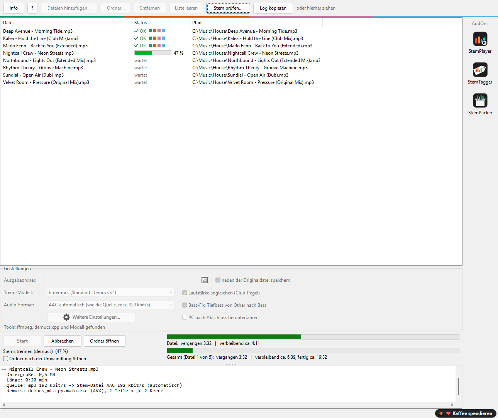
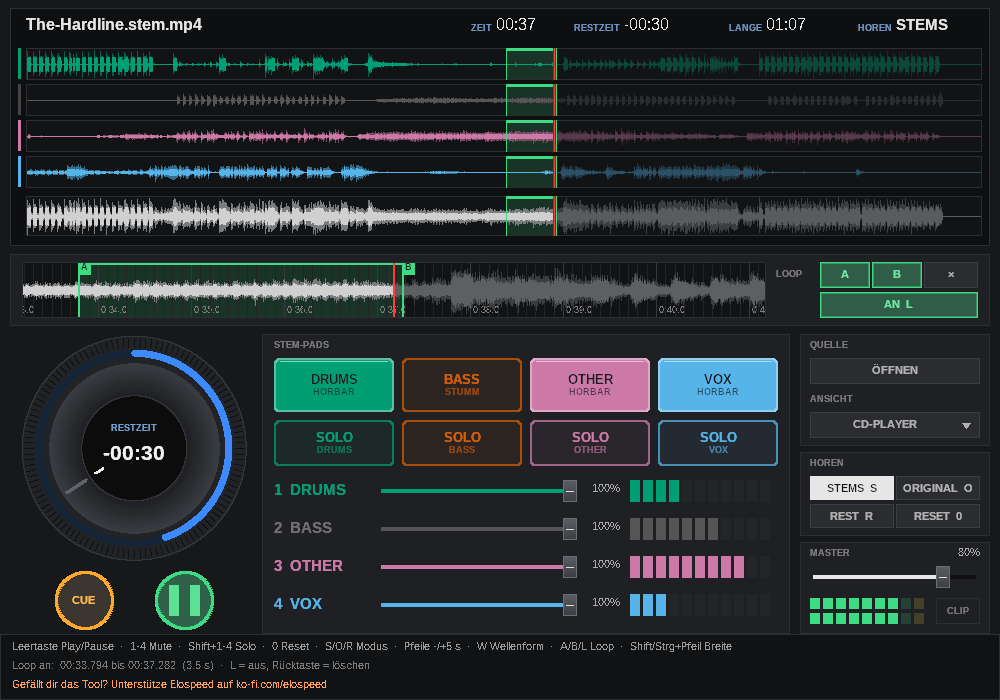

Aus deinen MP3s werden
Traktor Stems
Zerlegt jeden Track in Drums, Bass, Melodie und Gesang und speichert eine fertige .stem.mp4 für Traktor und Mixxx. Kostenlos, Open Source, nichts einzurichten.
- Kostenlos, MIT-Lizenz
- Windows 10 / 11
- Linux (Beta)
- Kein Python, Grafikkarte optional
- Läuft lokal auf deinem PC
- Ganze Ordner auf einmal

Was StemMaker kann
Vier Stems + Master
Drums, Bass, Other (Melodie) und Vox in einer .stem.mp4, bereit fürs Stem-Deck.
Schnelle Turbo-Engine
Etwa eine Minute pro Song auf einem normalen Prozessor, Sekunden mit Grafikkarte (NVIDIA, AMD, Intel).
Ganze Sammlungen
Ordner reinziehen, geschätzte Dauer sehen, über Nacht laufen lassen. Macht nach Abbruch oder Stromausfall weiter.
Tags und Cover bleiben
Titel, Interpret, Album, Genre, BPM, Tonart und Cover werden aus deiner Datei übernommen.
Qualität wie Traktor
Demucs-v4-Modelle (htdemucs, htdemucs_ft), Club-Pegel und Bass-Fix für saubere Wellenformen.
Nichts zu installieren
Kein Python, PyTorch oder CUDA, kein Konto, keine Cloud. Deine Musik bleibt auf dem PC.
Viele Formate
MP3, WAV, FLAC, AIFF, M4A, AAC, OGG und Opus, bis 320 kbit/s.
Hell oder dunkel, Hilfe auf F1
Folgt dem Windows-Design; F1 öffnet die bebilderte Anleitung.
Neun Sprachen
Deutsch, English, Español, Français, Português, Italiano, 日本語, Nederlands, Polski. Spanisch von David GJ.
Was in jeder Version neu ist: Versionshinweise.
So sieht es aus
AddOns inklusive
StemPlayer
- Stems prüfen, ohne sie in Traktor zu importieren
- Wellenform pro Stem, Stumm, Solo, Lautstärke
- A/B mit dem Original, Schleife A-B, Lupe, Scrubbing
- Drei Ansichten: kompakt, Wellenform, CD-Player
StemTagger
- Titel, Interpret, Album, Genre und Cover für Stem-Dateien und MP3s
- Viele Dateien auf einmal, die Stems bleiben unverändert
- Auch einzeln: StemTagger-Seite
StemPacker
- Packt eigene Stems (DAW, 5.1, andere Tools) in Stem-Dateien, ohne KI
- Auch einzeln: StemPacker-Seite

Schnell, auch ohne Grafikkarte
Ein Track von 4 Minuten
Reine Trennzeit mit htdemucs, gemessen auf unseren eigenen PCs. Ein Vortest beim ersten Start zeigt die Dauer auf deinem PC.
So geht's
- Installieren oder entpackenSetup oder portable ZIP, keine Adminrechte nötig.
- Musik reinziehenDateien oder ganze Ordner, dann auf Start klicken.
- In Traktor ladenJeder Track wird zu
Titel.stem.mp4, bereit fürs Stem-Deck.
StemMaker unter Linux
- Ein AppImage mit eingebautem Wine, nichts zu installieren
- Gleiche Version wie für Windows, mit allen AddOns und eingebautem Update
- Turbo rechnet vorerst nur auf dem Prozessor
AppImage startet nicht? Installiere libfuse2 (Ubuntu 24.04 und neuer: sudo apt install libfuse2t64).
Danke an David GJ und ptrex für das Testen der Linux-Version.
Fragen und Antworten
Ist StemMaker wirklich kostenlos?
Ja. StemMaker ist Open Source unter der MIT-Lizenz. Keine Werbung, kein Konto, keine Bezahlversion. Wenn er dir gefällt, freut sich Elospeed über eine freiwillige Spende auf Ko-fi.
In welchen DJ-Programmen laufen die Stem-Dateien?
Die Dateien folgen dem offenen NI-Stem-Format (MP4 mit Master, vier Stems und Stem-Metadaten), genau wie bei Stemgen. Gesichert sind:
- Traktor Pro 4: selbst getestet, die vier Stems laufen in den Stem Decks.
- Mixxx 2.6 (zurzeit Beta): selbst getestet, die Dateien laden als Stems mit vier Stem-Reglern, Namen, Farben und farbiger Stem-Wellenform. Die stabile Mixxx 2.5 kann noch keine Stems.
Andere Programme, die .stem.mp4 lesen, sollten ebenfalls funktionieren.
Brauche ich eine Grafikkarte oder Python?
Nein. StemMaker bringt seine Trenn-Engine mit (ONNX Runtime, dazu demucs.cpp als Rückfall). Es gibt also keine Python-Umgebung, kein PyTorch und keinen CUDA-Treiber zu installieren und nichts, was sich mit anderer Software auf deinem PC in die Haare kriegt. Die Turbo-Engine ist schon allein auf dem Prozessor schnell. Hast du eine Grafikkarte (NVIDIA, AMD oder Intel), testet StemMaker sie beim ersten Start und nimmt sie nur, wenn sie richtig und schneller rechnet; dieser Teil ist noch Beta. Nötig sind Windows 10 oder 11 (64 Bit) und beim ersten Start eine Internetverbindung für die Downloads (ffmpeg ca. 56 MB, Modell 81 MB).
Läuft StemMaker unter Linux oder macOS?
Linux: ja. Es gibt ein AppImage mit eingebautem Wine, du musst also nichts zusätzlich installieren (siehe StemMaker unter Linux). Es ist noch eine Beta, und Turbo rechnet dort nur auf dem Prozessor. macOS: Für macOS gibt es keine Version.
StemMaker, UVR5 oder StemRoller: Was ist der Unterschied?
Alle drei trennen Musik mit KI-Modellen in Stems. UVR5 und StemRoller speichern jeden Stem als eigene Audiodatei; UVR5 bietet viele Modelle und Einstellungen für eine möglichst saubere Trennung. StemMaker ist für DJs gemacht: Es schreibt pro Track eine fertige .stem.mp4, die Traktor und Mixxx direkt als Stem-Datei laden, mit Tags und Cover, und arbeitet ganze Ordner selbständig ab. Brauchst du einzelne WAV-Spuren, passen UVR5 oder StemRoller besser; willst du Stem-Dateien für deine DJ-Software, spart dir StemMaker den zusätzlichen Schritt des Packens.
Windows zeigt „Der Computer wurde durch Windows geschützt“. Ist das schlimm?
StemMaker ist nicht digital signiert, weil Zertifikate jedes Jahr Geld kosten. Klick auf „Weitere Informationen“ und dann auf „Trotzdem ausführen“. Der komplette Quellcode liegt auf GitHub. Du kannst den Download auf VirusTotal prüfen oder StemMaker selbst bauen.
Wie gut ist die Trennung?
Im Test gegen eine Stem-Datei, die Traktor Pro 4 aus demselben Track gemacht hat, lag StemMaker etwa gleichauf: Drums, Kick und Gesang klangen fast identisch. Bezahl-Tools wie RipX oder Lalal.ai und Spezialmodelle in UVR5 trennen noch sauberer. Hört man einen Stem solo, sind manchmal kleine Artefakte zu hören, wie bei jedem Werkzeug dieser Art.
Traktor Pro 4 kann selbst Stems machen. Wozu StemMaker?
Ehrlich gesagt: Wenn dir die Trennung von Traktor reicht, brauchst du StemMaker nicht. Seit Version 2.0 ist StemMaker auf demselben Prozessor etwa so schnell wie Traktor 4 und mit passender Grafikkarte deutlich schneller. Traktor behält seine Stems aber in der eigenen Sammlung: im Ordner „Stems“, mit kryptischen Dateinamen, verknüpft mit dem Original-Track. StemMaker schreibt eigenständige .stem.mp4-Dateien mit lesbaren Namen neben deine Musik. Die kannst du auf einen anderen Laptop oder USB-Stick kopieren und in jedem Programm nutzen, das .stem.mp4 liest. StemMaker arbeitet komplette Ordner selbstständig ab, zum Beispiel über Nacht, zeigt vorher die geschätzte Dauer und macht nach einem Abbruch oder Stromausfall weiter. Eine Traktor-Lizenz brauchst du dafür nicht, und leise Dateien hebt StemMaker auf Club-Pegel, damit die Wellenformen gut lesbar sind.
Werden Tags und Cover übernommen?
Ja: Titel, Interpret, Album, Genre, Jahr, Tracknummer, BPM, Tonart, Label, ISRC und das Cover werden aus der Quelldatei übernommen, damit die Stem-Datei in deiner Sammlung gleich richtig aussieht. BPM und Tonart ersetzt Traktor ohnehin durch seine eigene Analyse; bis dahin und in anderen Programmen stehen die Werte aus deiner Datei.
Welche Musik darf ich verwenden?
StemMaker ist ein Werkzeug für Musik, die dir gehört, zum Beispiel gekaufte Tracks oder eigene Produktionen. Bitte respektiere die Rechte der Künstler und nutze die Stem-Dateien nur für deine eigenen Zwecke.
Gibt es eine Kommandozeilen-Version?
Ja, AddOns\StemCLI.exe macht dasselbe ohne Fenster, für Batch-Dateien oder die Windows-Aufgabenplanung.
Wo kann ich Fragen stellen oder Ideen einbringen?
In den GitHub Discussions. Dort kannst du Screenshots, Logs und Dateien anhängen. Mitlesen geht ohne Konto, zum Schreiben brauchst du ein kostenloses GitHub-Konto.
Bereit für deine eigenen Stems?
Installer oder ZIP herunterladen und den ersten Track reinziehen.
StemMaker ist ein Ein-Personen-Hobbyprojekt, entstanden an vielen Abenden und dauerhaft kostenlos. Wenn es dir einen Abend Handarbeit spart, kannst du mir auf Ko-fi einen Kaffee spendieren ☕ oder einfach auf GitHub einen Stern geben. Beides ist ganz freiwillig.